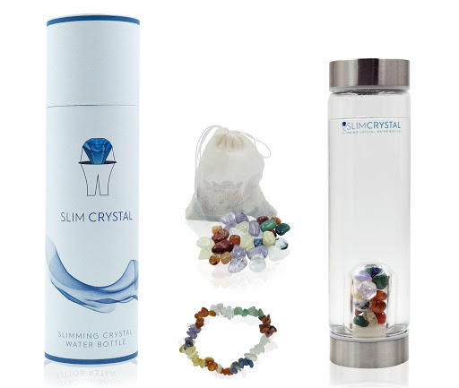
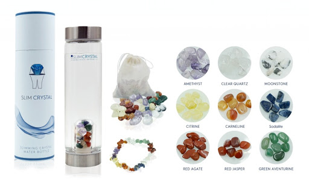

These are not endorsements or medical recommendations. They're three products I'm currently looking at, so you can take a look and decide for yourself. I link to the sellers' own sites, where you can read their full details, pricing and refund terms.
HYDRATION HABIT


SlimCrystal Water Bottle
A crystal-style water bottle sold online. I'm including it because the best hydration habit is the one you'll actually keep, and some people find it easier to drink more water when they enjoy using their bottle.
- Worth a look if you want a dedicated bottle to keep nearby
- Check the seller's page for materials, care instructions, price and refund policy
A bottle is a tool for building a habit. It won't do the drinking for you, and it isn't a treatment for any condition. Results vary.
View SlimCrystal on seller's site →
Affiliate link. I may earn a commission.
DIGESTIVE COMFORT

BellyFlush
A digestive-support supplement marketed for digestive comfort and regularity. If you're curious, read the full ingredient list and directions on the seller's page before deciding.
⚠️ Please read: BellyFlush contains herbal laxatives (senna, cascara sagrada and cape aloe). Laxatives aren't right for everyone and shouldn't be used long term without guidance. Check with your doctor or pharmacist first, especially if you're pregnant or nursing, take medication, or have a digestive condition.
View BellyFlush on seller's site →
Affiliate link. I may earn a commission.
JOINT SUPPORT

Joint Genesis
A joint-support dietary supplement from BioDynamix. Its listed ingredients include Mobilee®, French maritime pine bark, Boswellia serrata, ginger root and BioPerine®. If you're curious, read the full ingredient list and directions on the seller's page before deciding.
⚠️ Please read: Check with your doctor first if you're pregnant or nursing, take medication (especially blood thinners), or have a medical condition. This is a dietary supplement, not a treatment for arthritis, pain or any disease.
View Joint Genesis on seller's site →
Affiliate disclosure: I earn a commission if you buy through my link. Last updated November 22, 2026. See the official Joint Genesis page for the latest details. The views here are my own and don't represent BioDynamix.